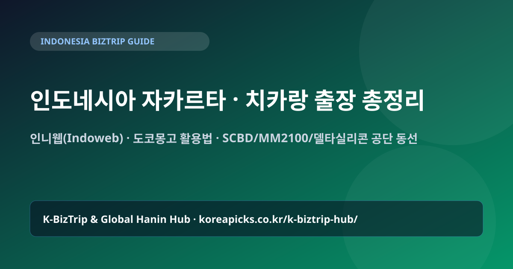

인도네시아 자카르타·치카랑 출장 & 인니웹(Indoweb) 200% 활용 실전 총정리 (2026)

1. 인도네시아 핵심 출장 권역: 자카르타 SCBD vs 치카랑·카라왕 공단
인도네시아 비즈니스 출장은 크게 ① 자카르타 도심(SCBD·수디르만·꾸닝안·세노파티)의 정부기관·금융·바이어 미팅 권역과 ② 동부 산업벨트(브카시·치카랑 MM2100·델타실리콘·자바베카·카라왕·수방)의 현대자동차·LG·포스코·한국 타이어/부품·봉제·화학 플랜트 권역으로 나뉩니다.
자카르타 시내에서 치카랑 공단까지는 직선거리로 약 40~50km에 불과하지만, 자카르타-치캄펙(Jakarta-Cikampek) 고속도로의 상습 정체로 인해 출퇴근 시간대에는 편도 2시간~2시간 30분이 소요됩니다. 따라서 공단 미팅이 2일 이상 연속된다면 자카르타 시내 호텔보다 치카랑 리뽀(Lippo Cikarang) 또는 델타실리콘 인근 비즈니스 호텔에 숙소를 잡는 것이 체력과 시간을 아끼는 핵심입니다.
2. 인니웹(Indoweb.org) & 도코몽고 실전 활용법
인도네시아는 전 세계 한인 사회 중에서도 온라인 커뮤니티가 가장 체계적으로 활성화된 나라입니다.
- 인니웹 (Indoweb.org): 인도네시아 한인 포털 1위 사이트입니다. 출장자에게 가장 유용한 코너는 '업체정보(렌트카·비자에이전시·통역·식당)'와 '구인구직(인니-영어-한국어 통역원 단기 섭외)', 그리고 실시간 교통·세관 이슈가 올라오는 '자유게시판/질문게시판'입니다.
- 도코몽고 (TokoMonggo.com): 장기 출장자나 주재원이 한국 식자재·생필품·도시락 반찬을 숙소로 주문할 때 가장 많이 이용하는 한인 온라인 몰입니다.
- 한인포스트 (Haninpost.com): 인도네시아 노동부 규정, 비자 단속 동향, 한인 기업 동정을 가장 빠르게 다루는 현지 한인 언론입니다.
3. 입국 비자(e-VOA vs 상용비자) & 공항 세관 주의사항
| 구분 | e-VOA (전자도착비자) | 상용/출장 비자 (C2 등) |
|---|---|---|
| 허용 활동 | 단순 비즈니스 회의, 바이어 미팅, 전시회 참관 | 공장 출입 협의, 기술 지도, 품질 점검 등(현장 라인 규정에 따름) |
| 체류 기간 | 30일 (1회 30일 연장 가능) | 60일 등 비자 타입별 상이 (스폰서 레터 필요) |
| 핵심 주의점 | 공장 생산라인 내부에서 직접 공구를 들고 설비를 조립·시운전하는 행위는 이민청 단속 대상이 될 수 있으므로, 현지 법인/파트너사 총무팀과 정확한 비자 타입을 사전 확인해야 합니다. | |
또한 인도네시아 입국 시에는 All Indonesia 전자세관신고서(e-CD)를 온라인으로 사전 작성해 QR코드를 캡처해 두어야 수카르노하타 공항을 빠르게 빠져나올 수 있습니다.
4. 현지 이동(이노바 기사 대절·그랩·고젝) & 추천 숙소 구역
자카르타 시내 단거리 이동은 Grab(그랩)이나 Gojek(고젝) 앱, 또는 블루버드(Bluebird) 택시로 충분합니다. 그러나 치카랑·카라왕 공단을 하루에 2~3곳 이상 방문할 때는 공단 내부에서 그랩이 잘 잡히지 않으므로 도요타 이노바(Innova Zenix/Reborn) 1일 기사 포함 렌트카(12시간 기준)를 대절하는 것이 표준입니다.
기사님과의 소통은 100% WhatsApp(왓츠앱)으로 이루어지며, 고속도로 톨비(E-Toll 카드 충전비)와 주차비 포함 여부를 탑승 전 미리 확인하세요.
✈️ 🇮🇩 인도네시아 출장 준비 & 실시간 현지 게시판 바로가기
출장 항공권·비즈니스 호텔·현지 eSIM 비교와 함께, 현지 통역·전담 기사 섭외는 국가별 실전 게시판을 이용하세요.
자주 묻는 질문 (FAQ)
Q. 인도네시아 치카랑 공단 출장 시 e-VOA(도착비자)로 가도 되나요?
단순 사무실 회의나 바이어 상담은 e-VOA로 가능하지만, 공장 제조 라인에 출입해 설비 점검·설치·검수를 진행하는 엔지니어 출장은 반드시 현지 스폰서를 통한 상용/기술 비자 요건을 확인하셔야 합니다.
Q. 인니웹(Indoweb)에서 통역이나 렌트카는 어떻게 구하나요?
인니웹(indoweb.org) 접속 후 상단 메뉴의 '업소록/비즈니스' 또는 '구인구직 > 아르바이트/통역' 게시판을 확인하시거나, 본 사이트의 인도네시아 출장 게시판을 통해 실시간으로 문의하실 수 있습니다.